Theory¶
Modeling wave energy converters (WECs) involves the interaction between the incident waves, device motion, power-take-off (PTO mechanism), and mooring. WEC-Sim uses a radiation and diffraction method [2][3] to predict power performance and design optimization. The radiation and diffraction method generally obtains the hydrodynamic forces from a frequency-domain boundary element method (BEM) solver using linear coefficients to solve the system dynamics in the time domain.

Coordinate System¶
The WEC-Sim Coordinate System figure illustrates a 3-D floating point absorber subject to incoming waves in water. The figure also defines the coordinates and the 6 degree of freedom (DOF) in WEC-Sim. The WEC-Sim coordinate system assumes that the positive X-axis defines a wave angle heading of zero (e.g., a wave propagating with along a zero-degree direction is moving in the +X direction). The positive Z-axis is in the vertical upwards direction, and the positive Y-axis direction is defined by the right-hand rule. In the vectors and matrices used in the code, Surge (x), Sway (y), and Heave (z) correspond to the first, second and third position respectively. Roll (Rx), Pitch (Ry), and Yaw (Rz) correspond to the fourth, fifth, and sixth position respectively.

WEC-Sim Coordinate System
Units¶
All units within WEC-Sim are in the MKS (meters-kilograms-seconds system) and angular measurements are specified in radians (except for wave directionality which is defined in degrees).
Boundary Element Method (BEM)¶
In WEC-Sim, wave forcing components are modeled using linear coefficients obtained from a frequency-domain potential flow Boundary Element Method (BEM) solver (e.g., WAMIT [4], AQWA [5], and Nemoh [6]). The BEM solutions are obtained by solving the Laplace equation for the velocity potential, which assumes the flow is inviscid, incompressible, and irrotational. More details on the theory for the frequency-domain BEM can be found in [4].
WEC-Sim imports non-dimensionalized hydrodynamic coefficients from an *.h5 data structure generated by BEMIO for the WAMIT, AQWA or Nemoh BEM solvers.
Alternatively, the *.h5 data structure can be manually defined by the user.
The WEC-Sim code scales the hydrodynamic coefficients according to the equations below, where 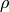 is the water density, 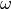 is the wave frequency in rad/s, and 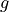 is gravity:
where 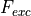 is the wave-excitation force/torque coefficient,  is the radiation added mass coefficient,
is the radiation added mass coefficient,  is the radiation wave damping coefficient, and 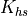 is the linear hydrostatic restoring coefficient.
is the radiation wave damping coefficient, and 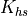 is the linear hydrostatic restoring coefficient.
Time-Domain Formulation¶
A common approach to determining the hydrodynamic forces is to use linear wave theory which assumes the waves are the sum of incident, radiated, and diffracted wave components. The dynamic response of the system is calculated by solving WEC system equations of motion [3][7]. The equation of motion for a floating body about its center of gravity can be given as:
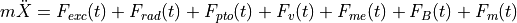
where is the (translational and rotational) acceleration vector of the device,  is the mass matrix, 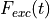 is the wave excitation force and torque (6-element) vector, 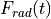 is the force and torque vector resulting from wave radiation, 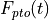 is the PTO force and torque vector, is the damping force and torque vector, 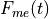 is the Morison Element force and torque vector, 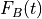 is the net buoyancy restoring force and torque vector, and 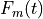 is the force and torque vector resulting from the mooring connection.
is the mass matrix, 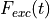 is the wave excitation force and torque (6-element) vector, 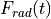 is the force and torque vector resulting from wave radiation, 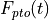 is the PTO force and torque vector, is the damping force and torque vector, 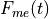 is the Morison Element force and torque vector, 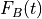 is the net buoyancy restoring force and torque vector, and 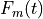 is the force and torque vector resulting from the mooring connection.
, , and are calculated using hydrodynamic coefficients provided by the frequency-domain BEM solver. The radiation term includes an added-mass term, matrix 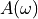, and wave damping term, matrix 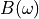, associated with the acceleration and velocity of the floating body, respectively, and given as functions of radian frequency () by the BEM solver. The wave excitation term 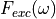 includes a Froude-Krylov force component generated by the undisturbed incident waves and a diffraction component that results from the presence of the floating body. The buoyancy term depends on the hydrostatic stiffness coefficient, displacement of the body, and its mass.
Numerical Methods¶
WEC-Sim can be used for regular and irregular wave simulations, but note that and are calculated differently for sinusoidal steady-state response scenarios and random sea simulations. The sinusoidal steady-state response is often used for simple WEC designs with regular incoming waves. However, for random sea simulations or any simulations where fluid memory effects of the system are essential, the convolution integral method is recommended to represent the fluid memory retardation force on the floating body. To speed computation of the convolution integral, the state space representation method can be specified to approximate this calculation as a system of linear ordinary differential equations.
Ramp Function¶
A ramp function ( ), necessary to avoid strong transient flows at the earlier time steps of the simulation, is used to calculate the wave excitation force. The ramp function is given by
), necessary to avoid strong transient flows at the earlier time steps of the simulation, is used to calculate the wave excitation force. The ramp function is given by
where  is the simulation time and 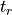 is the ramp time.
is the simulation time and 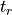 is the ramp time.
Sinusoidal Steady-State Response¶
This approach assumes that the system response is in sinusoidal steady-state form; therefore, it is only valid for regular wave simulations. The radiation term can be calculated using the added mass and the wave radiation damping term for a given wave frequency, which is obtained from
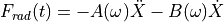
where is the velocity vector of the floating body.
The free surface profile is based on linear wave theory for a given wave height, wave frequency, and water depth. The regular wave excitation force is obtained from
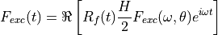
where 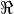 denotes the real part of the formula, is the ramp function,  is the wave height, is the frequency dependent complex wave-excitation amplitude vector, and
is the wave height, is the frequency dependent complex wave-excitation amplitude vector, and  is the wave direction.
is the wave direction.
Convolution Integral Formulation¶
To include the fluid memory effect, the convolution integral formulation based upon the Cummins equation [8] is used. The radiation term can be calculated by
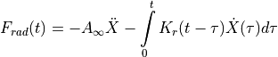
where 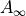 is the added mass matrix at infinite frequency and is the radiation impulse response function. This representation also assumes that there is no motion for 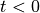.
For regular waves, the equation described in the last subsection is used to calculate the wave excitation vector. For irregular waves, the free surface elevation is constructed from a linear superposition of a number of regular wave components. Each regular wave component is extracted from a wave spectrum, , describing the wave energy distribution over a range of wave frequencies, generally characterized by a significant wave height and peak wave period. The irregular excitation force can be calculated as the real part of an integral term across all wave frequencies as follows
![F_{exc}(t)=\Re\left[ R_{f}(t) \sum_{j=1}^{N}F_{exc}(\omega_{j}, \theta)e^{i(\omega_{j}t+\phi_{j})} \sqrt{2S(\omega_{j})d\omega_{j}} \right]](_images/math/8550863958162a822628fbbe57fb3a24d74f17a0.png)
where 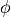 is the randomized phase angle and  is the number of frequency bands selected to discretize the wave spectrum. For repeatable simulation of an irregular wave field , WEC-Sim allows specification of , refer to the following wave features section.
is the number of frequency bands selected to discretize the wave spectrum. For repeatable simulation of an irregular wave field , WEC-Sim allows specification of , refer to the following wave features section.
State Space¶
It is highly desirable to represent the radiation convolution integral described in the last subsection in state space (SS) form [9]. This has been shown to dramatically increase computational speeds [10] and allow utilization of conventional control methods that rely on linear state space models. An approximation will need to be made as is solved from a set of partial differential equations where as a linear state space is constructed from a set of ordinary differential equations. In general, a linear system is desired such that:
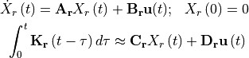
with 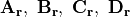 being the time-invariant state, input, output, and feed through matrices, while  is the input to the system and 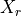 is the state vector describing the convolution kernal as time progresses.
is the input to the system and 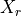 is the state vector describing the convolution kernal as time progresses.
Calculation of from State Space Matrices¶
The impulse response of a single-input zero-state state-space model is represented by
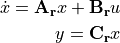
where is an impulse. If the initial state is set to 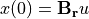 the response of the unforced (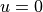) system
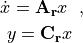
is clearly equivalent to the zero-state impulse response. The impulse response of a continuous system with a nonzero 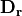 matrix is infinite at  ; therefore, the lower continuity value
; therefore, the lower continuity value  is reported at . The general solution to a linear time invariant (LTI) system is given by:
is reported at . The general solution to a linear time invariant (LTI) system is given by:
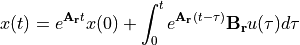
where 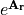 is the matrix exponential and the calculation of follows:
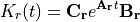
Realization Theory¶
The state space realization of the hydrodynamic radiation coefficients can be pursued in the time domain (TD). This consists of finding the minimal order of the system and the discrete time state matrices (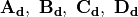) from samples of the impulse response function. This problem is easier to handle for a discrete-time system than for continuous-time. The reason being is that the impulse response function of a discrete-time system is given by the Markov parameters of the system:
where for 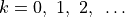 with 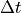 being the sampling period. The feedthrough matrix 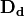 is assumed to be zero in order to maintain causality of the system, as a non-zero results in an infinite value at .
The most common algorithm to obtain the realization is to perform a Singular Value Decomposition (SVD) on the Hankel matrix of the impulse response function, as proposed by Kung [11]. The order of the system and state-space parameters are determined from the number of significant singular values and the factors of the SVD. The Hankel matrix () of the impulse response function
can be reproduced exactly by the SVD as
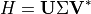
where 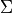 is a diagonal matrix containing the Hankel singular values in descending order. Examination of the Hankel singular values reveals there are only a small number of significant states and that the rank of can be greatly reduced without a significant loss in accuracy [10][12]. Further detail into the SVD method and calculation of the state space parameters will not be discussed here and the reader is referred to [10][12].
Regular Waves¶
Regular waves are defined as planar sinusoidal waves, where the incident wave is defined as 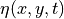 :
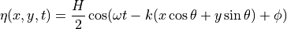
where is the wave height, is the wave frequency (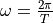),  is the wave number (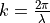), is the wave direction, and is the wave phase.
is the wave number (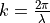), is the wave direction, and is the wave phase.
Irregular Waves¶
Irregular waves are modeled as the linear superposition of a large number of harmonic waves at different frequencies and angles of incidence, where the incident wave is defined as :
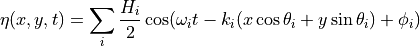
where is the wave height, is the wave frequency (), is the wave number (), is the wave direction, and is the wave phase (randomized for irregular waves).
Wave Spectra¶
The linear superposition of regular waves of distinct amplitudes and periods is characterized in the frequency domain by a wave spectrum. Through statistical analysis, spectra are characterized by specific parameters such as significant wave height, peak period, wind speed, fetch length, and others. Common types of wave spectra that are used by the offshore industry are discussed in the following sections. The general form of the wave spectra available in WEC-Sim is given by:
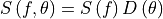
where 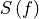 is the wave power spectrum,  is the wave frequency (in Hertz), 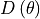 is the directional distribution, and is the wave direction (in Degrees). The formulation of requires that
is the wave frequency (in Hertz), 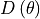 is the directional distribution, and is the wave direction (in Degrees). The formulation of requires that
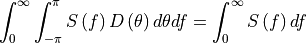
so that the total energy in the directional spectrum must be the same as the total energy in the one-dimensional spectrum.
where and are coefficients that vary depending on the wave spectrum and stands for the exponential function. Spectral moments of the wave spectrum, denoted  , are defined as
, are defined as

The spectral moment, is the variance of the free surface which allows one to define the mean wave height of the tallest third of waves, significant wave height (in m), as:
Pierson–Moskowitz (PM)¶
One of the simplest spectra, the Pierson–Moskowitz spectrum, was proposed by [13]. It assumed that after the wind blew steadily for a long time over a large area, the waves would come into equilibrium with the wind. This is the concept of a fully developed sea where a “long time” is roughly 10,000 wave periods and a “large area” is roughly 5,000 wave-lengths on a side. The spectrum is calculated from:
![S\left( f \right) = \frac{\alpha_{PM}g^{2}}{\left( 2 \pi \right)^{4}}f^{-5}\exp\left[-\frac{5}{4} \left( \frac{f_{p}}{f}\right)^{4} \right]~~ \\](_images/math/481070ac4c7c12f6d2184d23581c57f9dae9a6b3.png)
This implies coefficients of the general form:

where the parameter = 0.0081 typically, m/s is gravitational acceleration and is the peak frequency of the spectrum.
Note
Pierson-Moskowitz does not use significant wave height to define spectrum
Bretschneider (BS)¶
The two-parameter Bretschneider spectrum is based on significant wave height and peak wave frequency. For a given significant wave height, the peak frequency can be varied to cover a range of conditions including developing and decaying seas. In general, the parameters depend on strongly on wind speed, and also wind direction, fetch, and locations of storm fronts. The spectrum is given as:
![S\left( f \right) = \frac{{H_{m0}}^2}{4}\left(1.057f_{p}\right)^{4}f^{-5}\exp\left[-\frac{5}{4} \left( \frac{f_{p}}{f}\right)^{4} \right]~~ \\](_images/math/0ca590dc4f2ae4cfb50e362cbd1142d510eec32b.png)
This implies coefficients of the general form:
JONSWAP (JS)¶
The JONSWAP (Joint North Sea Wave Project) spectrum was purposed by Hasselmann et al. [14], and the original formulation was given as:
![& S\left( f \right) = \frac{ \alpha_{js} g^{2} }{ (2\pi)^{4}} f^{-5}\exp\left[-\frac{5}{4} \left( \frac{f_{p}}{f}\right)^{4} \right]\gamma^\Gamma \nonumber ~~ &\\
&\Gamma = \exp \left[ -\left( \frac{\frac{f}{f_{p}}-1}{\sqrt{2} \sigma}\right)^{2} \right],~~ \sigma = \begin{cases} 0.07 & f \leq f_{p} \\0.09 & f > f_{p} \end{cases} ~~ &\\](_images/math/f7c059b4ad59e3de18a8365de664d2ae5c678470.png)
with general form coefficients thus defined:

where is a nondimensional variable that is a function of the wind speed and fetch length.
Empirical fits were applied in an attempt to find a mean value that would capture the spectral shape of most measured sea states.
For a given significant wave height, setting  (default) , , and
(default) , , and  can be calculated by:
can be calculated by:
Where:

Power Take-Off (PTO)¶
Throughout the following sections, unless specification is made between linear and rotary PTOs, units are not explicitly stated.
Linear PTO¶
The PTO mechanism is represented as a linear spring-damper system where the reaction force is given by:
where is the stiffness of the PTO, is the damping of the PTO, and and are the relative motion and velocity between two bodies. The instantaneous power absorbed by the PTO is given by:

Hydraulic PTO¶
The PTO mechanism is modeled as a hydraulic system [15], where the reaction force is given by:
where is the differential pressure of the hydraulic piston and is the piston area. The instantaneous hydraulic power absorbed by the PTO is given by:
Mechanical PTO¶
The PTO mechanism is modeled as a direct-drive linear generator system [15], where the reaction force is given by:
where is the magnet pole pitch (the center-to-center distance of adjacent magnetic poles), is the flux linkage of the stator  -axis winding due to flux produced by the rotor magnets, and is the stator -axis current.
The instantaneous mechanical power absorbed by the PTO is given by:
-axis winding due to flux produced by the rotor magnets, and is the stator -axis current.
The instantaneous mechanical power absorbed by the PTO is given by:
For more information about application of pto systems in WEC-Sim, refer to Constraint and PTO Features.
Mooring¶
The mooring load is represented using a linear quasi-static mooring stiffness or by using the mooring forces calculated from MoorDyn [1], which is an open-source lumped-mass mooring dynamics model.
Mooring Matrix¶
When linear quasi-static mooring stiffness is used, the mooring load can be calculated by
where and are the stiffness and damping matrices for the mooring system, and  and are the displacement and velocity of the body, respectively.
and are the displacement and velocity of the body, respectively.
MoorDyn¶
MoorDyn discretizes each mooring line in a mooring system into evenly-sized line segments connected by node points (see MoorDyn figure). The line mass is lumped at these node points along with gravitational and buoyancy forces, hydrodynamic loads, and reactions from contact with the seabed. Hydrodynamic drag and added mass are calculated based on Morison’s equation. A mooring line’s axial stiffness is modeled by applying a linear stiffness to each line segment in tension only. A damping term is also applied in each segment to dampen non-physical resonances caused by the lumped-mass discretization. Bending and torsional stiffnesses are neglected. Bottom contact is represented by vertical stiffness and damping forces applied at the nodes when a node is located below the seabed. [16].

MoorDyn mooring model elements
For more information about application of mooring systems in WEC-Sim, refer to Mooring Features .
Nonlinear Buoynancy and Froude-Krylov Wave Excitation¶
The linear model assumes that the body motion and the waves consist of small amplitudes in comparison to the wavelengths. A weakly nonlinear approach is applied to account for the nonlinear hydrodynamic forces induced by the instantaneous water surface elevation and body position. Rather than using the BEM calculated linear wave-excitation and hydrostatic coefficients, the nonlinear buoyancy and the Froude-Krylov force components can be obtained by integrating the static and dynamic pressures over each panel along the wetted body surface at each time step. Because linear wave theory is used to determine the flow velocity and pressure field, the values become unrealistically large for wetted panels that are above the mean water level. To correct this, the Wheeler stretching method is applied [17], which applies a correction to the instantaneous wave elevation that forces its height to be equal to the water depth when calculating the flow velocity and pressure,
where  is the mean water depth, and
is the mean water depth, and  is the z-value on the instantaneous water surface.
is the z-value on the instantaneous water surface.
Note
The nonlinear WEC-Sim method is not intended to model highly nonlinear hydrodynamic events, such as wave slamming and wave breaking.
For more information about application of nonlinear hydrodynamics in WEC-Sim, refer to Nonlinear Buoyancy and Froude-Krylov Wave Excitation.
Viscous Damping and Morison Elements¶
Additional damping and added-mass can be added to the WEC system. This facilitates experimental validation of the WEC-Sim code, particularly in the event that the BEM hydrodynamic outputs are not sufficiently representative of the physical system.
Viscous Damping¶
Linear damping and quadratic drag forces add flexibility to the definition of viscous forcing
where is the linear (viscous) damping coefficient,  is the quadratic drag coefficient, is the fluid density, and is the characteristic area for drag calculation. Alternatively, one can define directly.
is the quadratic drag coefficient, is the fluid density, and is the characteristic area for drag calculation. Alternatively, one can define directly.
Because BEM codes are potential flow solvers and neglect the effects of viscosity, generally must be included to accurately model device performance. However, it can be difficult to select representative drag coefficients, as they depend on device geometry, scale, and relative velocity between the body and the flow around it. Empirical data on the drag coefficient can be found in various literature and standards, but is generally limited to simple geometries evaluated at a limited number of scales and flow conditions. For realistic device geometries, the use of computational fluid dynamic simulations or experimental data is encouraged.
Morison Elements¶
The Morison Equation assumes that the fluid forces in an oscillating flow on a structure of slender cylinders or other similar geometries arise partly from pressure effects from potential flow and partly from viscous effects. A slender cylinder implies that the diameter, D, is small relative to the wave length,  , which is generally met when . If this condition is not met, wave diffraction effects must be taken into account. Assuming that the geometries are slender, the resulting force can be approximated by a modified Morison formulation [18]. The formulation for each element on the body can be given as
, which is generally met when . If this condition is not met, wave diffraction effects must be taken into account. Assuming that the geometries are slender, the resulting force can be approximated by a modified Morison formulation [18]. The formulation for each element on the body can be given as
where  is the fluid particle velocity due to wave and current, is the coefficient of added mass, and is the displaced volume.
is the fluid particle velocity due to wave and current, is the coefficient of added mass, and is the displaced volume.
Note
WEC-Sim does not consider buoyancy effects when calculating the forces from Morison elements.
For more information about application of Morison Elements in WEC-Sim, refer to Morison Elements.
References¶
- 1
Matthew Hall. Moordyn user’s guide. 2015.
- 2
Ye Li and Yi-Hsiang Yu. A Synthesis of Numerical Methods for Modeling Wave Energy Converter-Point Absorbers. Renewable and Sustainable Energy Reviews, 16(6):4352–4364, 2012.
- 3(1,2)
Aurélien Babarit, J. Hals, M.J. Muliawan, A. Kurniawan, T. Moan, and J. Krokstad. Numerical Benchmarking Study of a Selection of Wave Energy Converters. Renewable Energy, 41:44–63, 2012.
- 4(1,2)
CH Lee and JN Newman. WAMIT User Manual. 2006.
- 5
ANSYS Aqwa. URL: http://www.ansys.com/Products/Other+Products/ANSYS+AQWA.
- 6
Nemoh a Open source BEM. URL: http://openore.org/tag/nemoh/.
- 7
Jerica D. Nolte and R. C. Ertekin. Wave power calculations for a wave energy conversion device connected to a drogue. Journal of Renewable and Sustainable Energy, 2014.
- 8
WE Cummins. The Impulse Response Function and Ship Motions. Technical Report, David Taylor Model Dasin-DTNSRDC, 1962.
- 9
Z. Yu and J. Falnes. State-space Modelling of a Vertical Cylinder in Heave. Applied Ocean Research, 5:265–275, 1996.
- 10(1,2,3)
R. Taghipour, T. Perez, and T. Moan. Hybrid Frequency-time Domain Models for Dynamic Response Analysis of Marine Structures. Ocean Engineering, 7:685–705, 2008.
- 11
Sun-Yuan Kung. A new identification and model reduction algorithm via singular value decomposition. In Proc. 12th Asilomar Conf. Circuits, Syst. Comput., Pacific Grove, CA, 705–714. 1978.
- 12(1,2)
Erlend Kristiansen, Åsmund Hjulstad, and Olav Egeland. State-space representation of radiation forces in time-domain vessel models. Ocean Engineering, 32(17):2195–2216, 2005.
- 13
W. J. Pierson and L. A. Moskowitz. Proposed Spectral Form for Fully Developed Wind Seas Based on the Similarity Theory of S. A. Kitaigorodskii. Geophysical Research, 69:5181–5190, 1964.
- 14
K. Hasselman, T.P. Barnett, E. Bouws, H. Carlson, D.E. Cartwright, K. Enke, J.A. Ewing, H. Gienapp, D.E. Hasselmann, P. Kruseman, A. Meerburg, P. Mller, D.J. Olbers, K. Richter, W. Sell, and H. Walden. Measurements of wind-wave growth and swell decay during the Joint North Sea Wave Project (JONSWAP). Technical Report 12, German Hydrographic Institute, 1973.
- 15(1,2)
R. So, A. Simmons, T. Brekken, K. Ruehl, and C. Michelen. Development of PTO-SIM: A Power Performance Module for the Open-Souse Wave Energy Converter Code WEC-SIM. In Proceedings of OMAE 2015. 2015.
- 16
Matthew Hall and Andrew Goupee. Validation of a lumped-mass mooring line model with deepcwind semisubmersible model test data. Ocean Engineering, 104:590–603, 2015.
- 17
J D Wheeler and others. Methods for calculating forces produced by irregular waves. In Offshore Technology Conference. 1969.
- 18
J R Morison, M P O’brien, J W Johnson, and S A Schaaf. The force exerted by surface waves on piles. Petroleum Transactions, AIME, 189:149–154, 1950.